Siete caminos para el símbolo de Linex Trip, explicados uno por uno con la misma rejilla y probados con las mismas cuatro pruebas. Cada una con lo que gana y con lo que todavía le falta. Nada está decidido: la elección es del administrador de marca.Seven paths for the Linex Trip symbol, explained one by one with the same grid and tested against the same four checks. Each with what it gains and what it's still missing. Nothing is decided: the choice belongs to the brand administrator.
EXPLORACIÓN ABIERTAOPEN EXPLORATION
Estas siete propuestas son anteriores al cambio de color del 14 de septiembre de 2026: están dibujadas con el Índigo anterior #1A0E3E, no con el Azul Trip #00145A que hoy es el color principal. Si se elige alguna, hay que recolorearla antes de nada. Nada de esta página es vigente. El logotipo oficial de Linex Trip sigue siendo el wordmark de 01 · Logotipo, sin símbolo. Elegir uno de estos siete es una decisión del administrador de marca, y cuando ocurra se actualizan en el mismo cambio la 01 · Logotipo, la paleta si hace falta y los tokens de marca.These seven proposals predate the colour change of September 14, 2026: they’re drawn with the previous Indigo #1A0E3E, not the Trip Blue #00145A that is the primary colour today. If one is chosen, it has to be recoloured before anything else. Nothing on this page is current. Linex Trip’s official logo is still the wordmark from 01 · Logo, with no symbol. Choosing one of these seven is a decision for the brand administrator, and when it happens, 01 · Logo, the palette if needed, and the brand tokens all get updated in the same change.
PropuestasProposals
Las siete propuestas salen del mismo mundo, y por eso se pueden comparar: todas usan Índigo anterior y Celeste, todas conservan el wordmark “Linex Trip” con Linex en navy y Trip en celeste, y todas llegan con la bajada “Viaja Inteligente”, que es el claim principal de la marca (10 · Propuesta de valor). Lo que cambia entre una y otra es de dónde saca su significado. Aquí están los siete símbolos solos, sin el nombre al lado — que es exactamente como se ven en un avatar o en una pestaña del navegador.The seven proposals come from the same world, which is why they can be compared: all use the previous Indigo and Sky Blue, all keep the “Linex Trip” wordmark with Linex in navy and Trip in sky blue, and all arrive with the tagline “Travel Smart”, which is the brand’s main claim (10 · Value proposition). What changes from one to the next is where it draws its meaning from. Here are the seven symbols alone, without the name beside them — exactly how they’d look in an avatar or a browser tab.
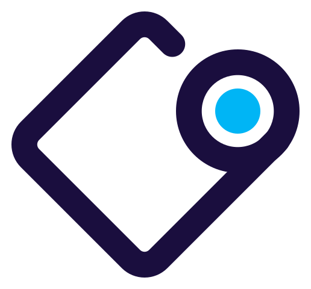
01La etiqueta de equipajeThe luggage tag
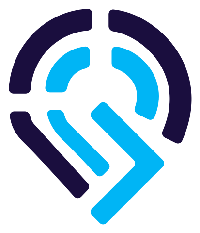
02El pin con señalThe pin with a signal
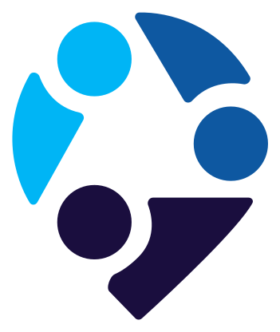
03Los que viajanThe people who travel
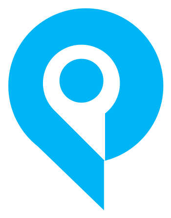
04El punto llenoThe solid dot
05El origamiThe origami
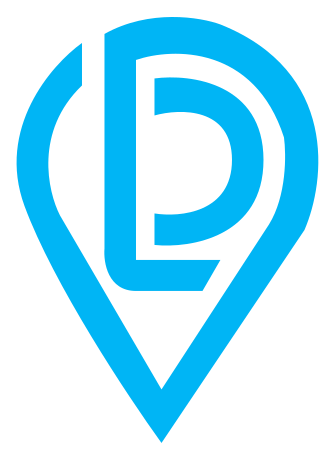
06El punto abiertoThe open dot
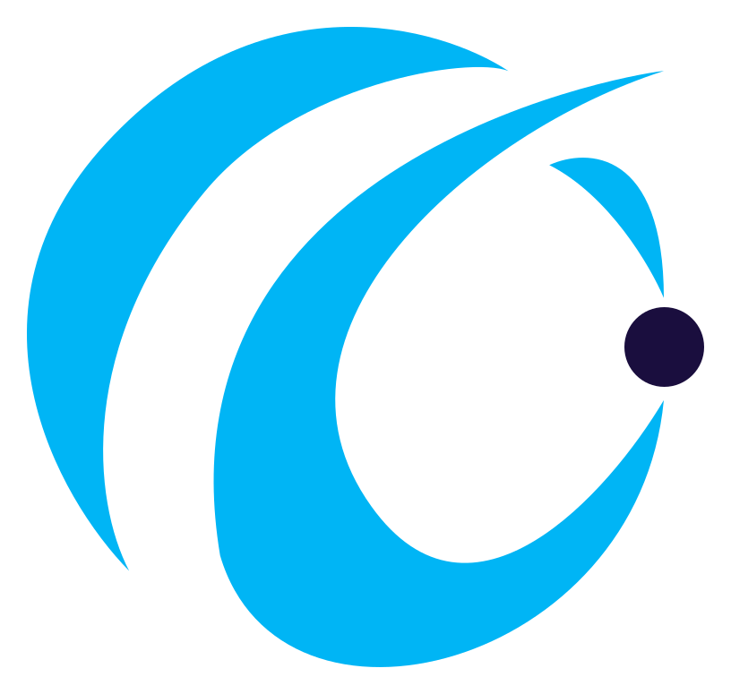
07La órbitaThe orbit
Tres familias, no siete ideas sueltasThree families, not seven separate ideas
El lugar — 02, 04, 06The place — 02, 04, 06
El símbolo es un punto en el mapa. Prometen destino: “aquí vas”. Es el territorio más reconocible de la categoría y, por lo mismo, el más ocupado por otros.The symbol is a point on the map. They promise a destination: “here’s where you’re going.” It’s the most recognisable territory in the category, and for that same reason, the most crowded by competitors.
El movimiento — 05, 07Movement — 05, 07
El símbolo es una trayectoria. Prometen desplazamiento y ligereza: “así llegas”. Son las más abstractas y las que más dependen del wordmark para explicarse.The symbol is a trajectory. They promise motion and lightness: “this is how you get there.” They’re the most abstract, and the ones that depend most on the wordmark to explain themselves.
La gente y el objeto — 01, 03People and the object — 01, 03
El símbolo es alguien o algo concreto del viaje. Prometen experiencia vivida: “esto se siente así”. Son las dos con más carga humana y menos aire de buscador.The symbol is someone or something concrete from the trip. They promise lived experience: “this is what it feels like.” They’re the two with the most human weight and the least search-engine feel.
01
La etiqueta de equipajeThe luggage tag
Familia · El objetoFamily · ObjectRecomendadaRecommended
La única que ya funciona en todas partes sin retocar nada, y la única cuyo símbolo no está ocupado por la competencia. Llega con los dos lockups resueltos.The only one that already works everywhere without any tweaking, and the only one whose symbol isn’t already claimed by the competition. It arrives with both lockups solved.
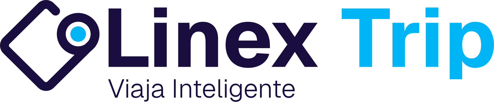
Sobre blancoOn white
NegativoNegative
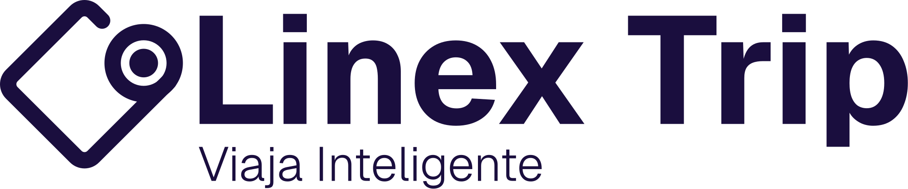
MonocromoMonochromeÍcono 32pxIcon 32px
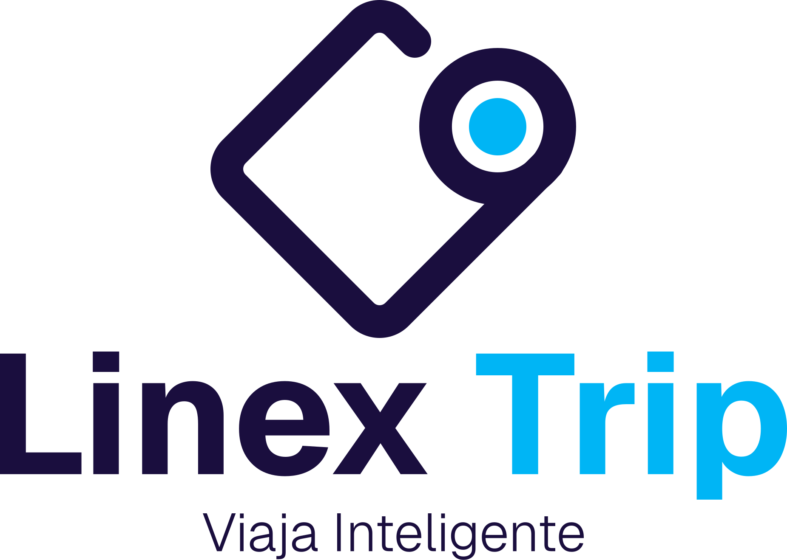
Lockup vertical, ya resuelto.Vertical lockup, already solved.
Qué vesWhat you seeUn rombo con una esquina redondeada y un ojal con punto celeste. Una etiqueta de maleta — o un mapa doblado con su marcador puesto.A diamond with one rounded corner and an eyelet with a sky-blue dot. A luggage tag — or a folded map with its pin placed.
Qué dice de Linex TripWhat it says about Linex TripEs la única que trae un objeto real del viaje. No es una metáfora: la etiqueta es lo que te dan cuando ya despachaste, es decir, cuando el viaje dejó de ser un plan. Traduce el pilar reserva en minutos a su consecuencia.It’s the only one that brings a real object from the trip. It’s not a metaphor: the tag is what they give you once you’ve checked in, meaning the trip has stopped being a plan. It translates the book in minutes pillar into its consequence.
A quién reconoceWho it recognisesA los tres arquetipos, pero sobre todo al decisor rápido: la etiqueta significa que ya está hecho. Nadie tiene una etiqueta de equipaje mientras todavía compara precios.All three archetypes, but above all the quick decision-maker: the tag means it’s already done. Nobody has a luggage tag while they’re still comparing prices.
Dónde brilla y dónde sufreWhere it shines and where it strugglesBrilla en pequeño: es la forma más sólida de las siete y a 32px sigue siendo la misma silueta. Sufre por parecido — el rombo con ojal se acerca peligrosamente a una etiqueta de precio o a un badge de descuento, y eso empuja la marca hacia “oferta” en vez de “viaje”.It shines at small sizes: it’s the most solid shape of the seven, and at 32px it’s still the same silhouette. It suffers from resemblance — the diamond with the eyelet comes dangerously close to a price tag or a discount badge, which pushes the brand toward “deal” instead of “trip”.
Chequeo del sistemaSystem checkContraste 3:1Contrast 3:1Paleta oficialOfficial paletteMonocromoMonochromeDos lockupsTwo lockups Es la única que pasa las cuatro pruebas sin un solo retoque; ninguna otra pasa más de dos.It's the only one that passes all four checks without a single tweak; no other passes more than two.
02
El pin con señalThe pin with a signal
Familia · El lugarFamily · Place
La que más dice de la marca: destino y respuesta en una sola forma. Cumple contraste y paleta, pero llega con un solo lockup y se cierra en bordado.The one that says the most about the brand: destination and response in a single shape. It passes contrast and palette, but arrives with only one lockup and closes up when embroidered.
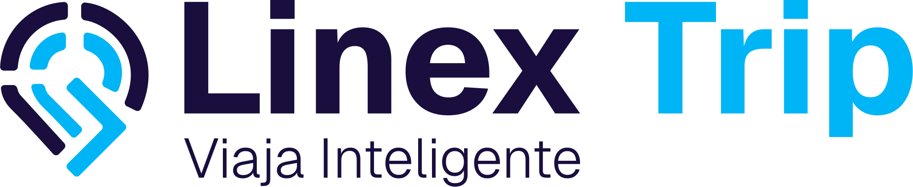
Sobre blancoOn white
NegativoNegative
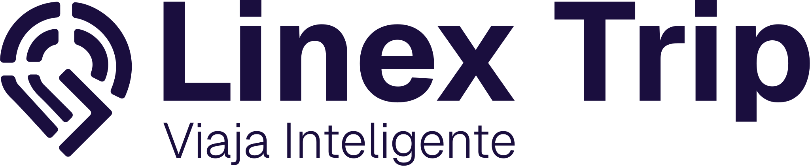
MonocromoMonochromeÍcono 32pxIcon 32px
Qué vesWhat you seeUn punto de mapa cuya mitad superior son ondas concéntricas y cuya cola es una flecha que sale hacia abajo. Ubicación, señal y salida en una sola forma.A map pin whose upper half is concentric waves and whose tail is an arrow pointing downward. Location, signal and departure in a single shape.
Qué dice de Linex TripWhat it says about Linex TripQue la marca no solo marca el destino: también responde. Las ondas son la versión dibujada de acompañamiento real, y la flecha es reserva en minutos. Es la única de las siete que intenta decir dos pilares a la vez.That the brand doesn’t just mark the destination: it also responds. The waves are the drawn version of real support, and the arrow is book in minutes. It’s the only one of the seven that tries to say two pillars at once.
A quién reconoceWho it recognisesAl decisor rápido, que lo que quiere es que alguien conteste ya. Le dice menos al planificador digital, que no busca señal sino comparación.The quick decision-maker, who just wants someone to answer right away. It says less to the digital planner, who isn’t looking for a signal but for comparison.
Dónde brilla y dónde sufreWhere it shines and where it strugglesBrilla en avatar y favicon: el símbolo se aísla limpio y aguanta los 32px. Sufre en bordado, sello y grabado — son siete piezas separadas y las ondas finas se cierran cuando el trazo engorda.It shines in avatars and favicons: the symbol isolates cleanly and holds up at 32px. It suffers in embroidery, stamps and engraving — it’s seven separate pieces, and the thin waves close up when the stroke thickens.
Chequeo del sistemaSystem checkContraste 3:1Contrast 3:1Paleta oficialOfficial paletteMonocromoMonochromeUn solo lockupOnly one lockup En un solo color la onda y la cola se tocan y el símbolo pierde profundidad. Falta la versión vertical.In a single colour the wave and the tail touch and the symbol loses depth. The vertical version is missing.
03
Los que viajanThe people who travel
Familia · La genteFamily · People
La única con personas adentro: la más difícil de olvidar y la más alineada con el propósito. También la más cara de resolver.The only one with people inside it: the hardest to forget and the most aligned with the purpose. Also the most expensive to execute.
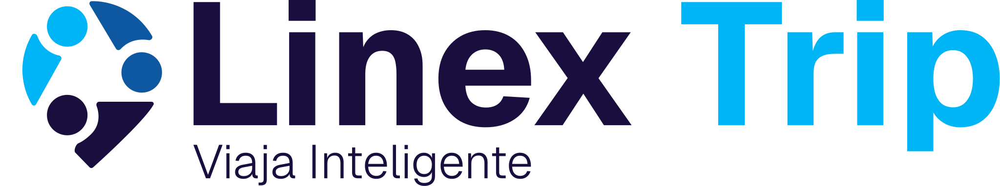
Sobre blancoOn white
NegativoNegative
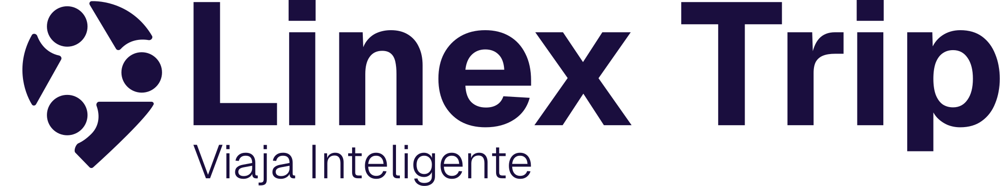
MonocromoMonochromeÍcono 32pxIcon 32px
Qué vesWhat you seeTres figuras de cabeza redonda girando alrededor de un centro, apoyadas sobre una punta de pin. Un grupo en movimiento, no un vehículo.Three round-headed figures circling around a centre, resting on a pin point. A group in motion, not a vehicle.
Qué dice de Linex TripWhat it says about Linex TripQue primero son personas y después es un vuelo. Es la única de las siete que no habla del medio ni del destino sino de quién viaja — y la que más se acerca al propósito de la marca: que viajar bien esté al alcance de cualquiera.That it’s people first and a flight second. It’s the only one of the seven that doesn’t speak of the mode of travel or the destination, but of who’s travelling — and the one that comes closest to the brand’s purpose: that travelling well should be within anyone’s reach.
A quién reconoceWho it recognisesA la familia viajera, sin ambigüedad: son tres y se mueven juntas. Es la propuesta con más carga emocional y la que menos parece un buscador de tarifas.The travelling family, unambiguously: there are three of them and they move together. It’s the proposal with the most emotional weight and the one that looks least like a fare search engine.
Dónde brilla y dónde sufreWhere it shines and where it strugglesBrilla en redes y en campaña, donde el logo compite con fotografía de gente y necesita el mismo registro. Sufre a 32px: las tres figuras se funden en una flor y se pierde justo lo que la hace especial.It shines on social media and in campaigns, where the logo competes with photography of people and needs the same register. It suffers at 32px: the three figures blur into a flower shape, and exactly what makes it special gets lost.
Chequeo del sistemaSystem checkContraste 3:1Contrast 3:1Color fuera de paletaColour outside paletteMonocromoMonochromeÍcono 32pxIcon 32px Usa un tercer azul, #0E58A1, que no es ninguno de los seis colores oficiales de 03. O se sustituye por navy/celeste, o la elección arrastra una decisión de paleta.It uses a third blue, #0E58A1, that isn’t one of the six official colours in 03. Either it’s swapped for navy/sky blue, or choosing it drags along a palette decision.
04
El punto llenoThe solid dot
Familia · El lugarFamily · Place
Imbatible a tamaño pequeño — y también la más parecida a todas las demás de la categoría.Unbeatable at small sizes — and also the most similar to everything else in the category.
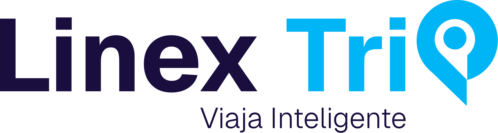
Sobre blancoOn white
NegativoNegative
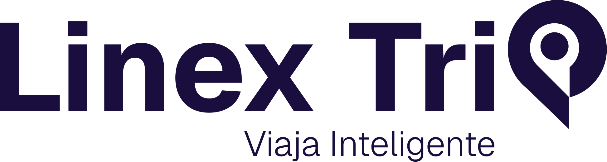
MonocromoMonochromeÍcono 32pxIcon 32px
Qué vesWhat you seeLa misma “p” convertida en pin que la propuesta 06, pero rellena, con el punto calado en blanco. La forma más directa del conjunto.The same “p” turned into a pin as proposal 06, but filled in, with the dot cut out in white. The most direct shape of the set.
Qué dice de Linex TripWhat it says about Linex TripLo mismo que la 06, con más peso: el destino no se sugiere, se afirma. Donde la 06 propone un juego, esta pone una señal.The same as 06, with more weight: the destination isn’t suggested, it’s stated. Where 06 offers a wordplay, this one puts up a signal.
A quién reconoceWho it recognisesA los tres por igual, y a ninguno en particular. Es la más neutra de las siete: nadie la rechaza y nadie se ve retratado en ella.All three equally, and none in particular. It’s the most neutral of the seven: nobody rejects it, and nobody sees themselves reflected in it.
Dónde brilla y dónde sufreWhere it shines and where it strugglesBrilla donde hay poco espacio y poca resolución: favicon, ícono de app, bordado, sello. Es la que mejor sobrevive los 32px de las siete. Sufre por genericidad — el pin sólido es la forma más usada de toda la categoría de viajes, y ahí Linex Trip se parece a todos los demás.It shines where there’s little space and low resolution: favicon, app icon, embroidery, stamp. It’s the one that best survives 32px of the seven. It suffers from genericness — the solid pin is the most used shape in the entire travel category, and there Linex Trip looks like everyone else.
Chequeo del sistemaSystem checkContraste 2.35:1Contrast 2.35:1Paleta oficialOfficial paletteMonocromoMonochromeIsotipo = letraSymbol = letter 100% celeste, igual que la 06. Y el símbolo aislado sigue siendo una letra del nombre: usarlo solo funciona mejor que en la 06, pero conceptualmente arrastra el mismo problema.100% sky blue, same as 06. And the isolated symbol is still a letter from the name: using it alone works better than in 06, but conceptually it carries the same problem.
05
El origamiThe origami
Familia · El movimientoFamily · Movement
Ligera y ya resuelta en dos formatos, pero se lee antes como mensajería o botón de play que como viaje.Light and already solved in two formats, but reads more like messaging or a play button than like travel.
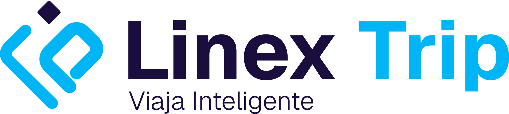
Sobre blancoOn white
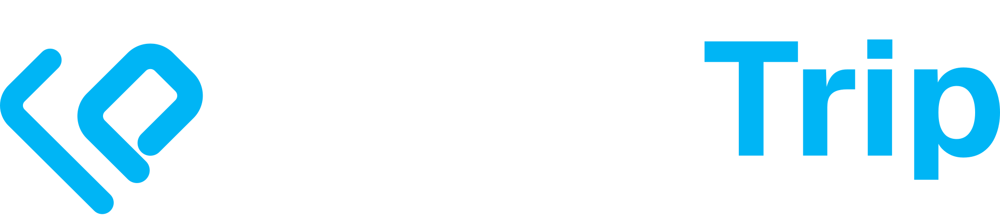
NegativoNegative
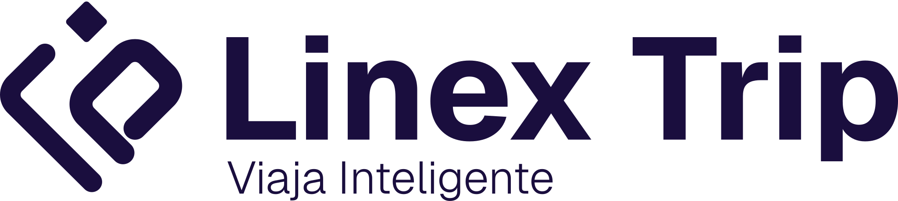
MonocromoMonochromeÍcono 32pxIcon 32px
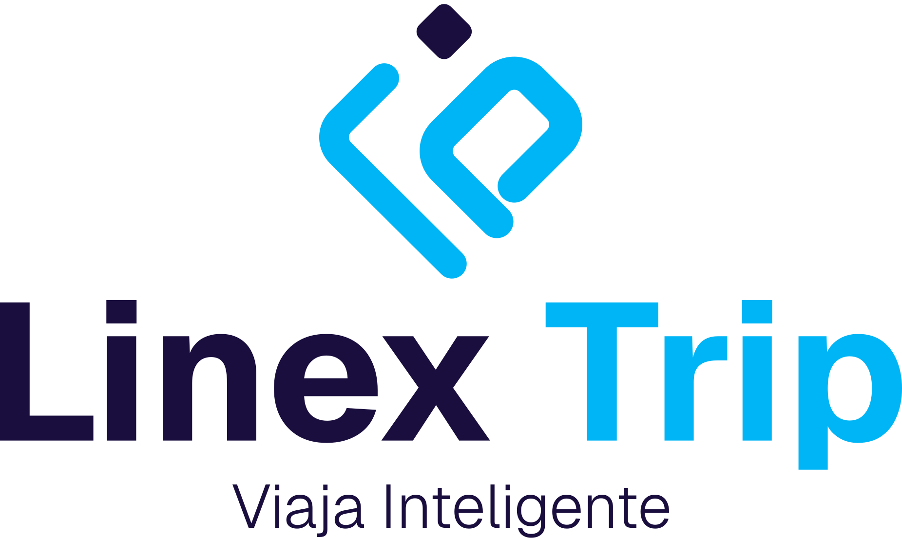
Lockup vertical, ya resuelto.Vertical lockup, already solved.
Qué vesWhat you seeDos trazos plegados en diagonal con un diamante encima. Un avión de papel, o una “P” doblada sobre sí misma.Two strokes folded diagonally with a diamond on top. A paper plane, or a “P” folded over itself.
Qué dice de Linex TripWhat it says about Linex TripLigereza y ascenso: viajar sin peso, decidir sin fricción. Es la que más se acerca al pilar reserva en minutos, y la única cuyo dibujo sugiere movimiento hacia arriba en vez de hacia adelante.Lightness and ascent: travelling without weight, deciding without friction. It’s the one that comes closest to the book in minutes pillar, and the only one whose shape suggests upward motion instead of forward motion.
A quién reconoceWho it recognisesAl decisor rápido. Es la más joven de las siete en tono, y la que mejor encajaría en una app antes que en una vitrina de agencia.The quick decision-maker. It’s the youngest in tone of the seven, and the one that would best fit an app rather than an agency storefront.
Dónde brilla y dónde sufreWhere it shines and where it strugglesBrilla en movimiento — el pliegue pide animarse en una transición o en una pantalla de carga — y como ícono de app. Sufre en lectura fría: a primera vista se lee antes como flecha de reproducción o como logo de mensajería que como viaje.It shines in motion — the fold begs to be animated in a transition or a loading screen — and as an app icon. It suffers on a cold read: at first glance it reads more like a play arrow or a messaging logo than like travel.
Chequeo del sistemaSystem checkContraste 2.35:1Contrast 2.35:1Paleta oficialOfficial paletteMonocromoMonochromeDos lockupsTwo lockups Los dos trazos van en celeste y solo el diamante es navy: sobre blanco el símbolo entero queda por debajo del 3:1.Both strokes are sky blue and only the diamond is navy: over white, the whole symbol falls below 3:1.
06
El punto abiertoThe open dot
Familia · El lugarFamily · Place
La idea más elegante del grupo, sin un símbolo que pueda vivir solo.The most elegant idea in the group, without a symbol that can stand on its own.
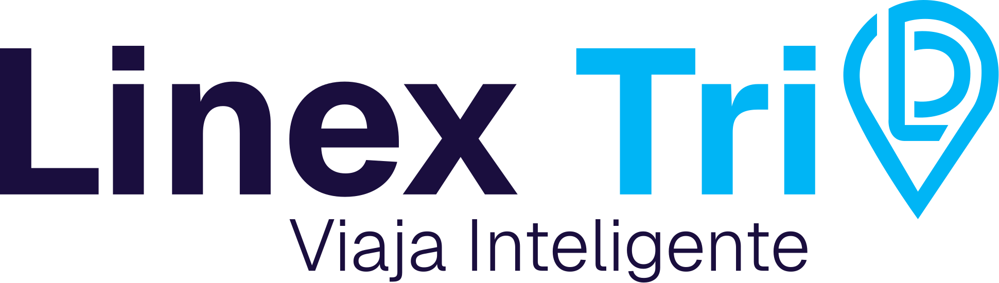
Sobre blancoOn white
NegativoNegative
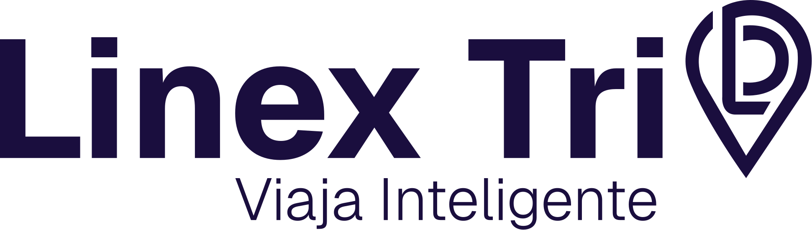
MonocromoMonochromeÍcono 32pxIcon 32px
Qué vesWhat you seeLa “p” final de Trip convertida en un pin de ubicación dibujado en contorno. El nombre termina, literalmente, en un lugar.The final “p” of Trip turned into a location pin drawn in outline. The name literally ends in a place.
Qué dice de Linex TripWhat it says about Linex TripQue el destino no es un adorno pegado al lado del nombre: está dentro del nombre. Es la lectura más económica de las siete — no agrega una forma, transforma una que ya estaba.That the destination isn’t an ornament stuck next to the name: it’s inside the name. It’s the most economical reading of the seven — it doesn’t add a shape, it transforms one that was already there.
A quién reconoceWho it recognisesAl planificador digital, que lee el nombre completo y agradece el juego. A quien solo alcanza a ver un ícono no le dice nada, porque a este logo no le sobra ícono.The digital planner, who reads the full name and appreciates the wordplay. To someone who only glimpses an icon it says nothing, because this logo has no icon to spare.
Dónde brilla y dónde sufreWhere it shines and where it strugglesBrilla donde el lockup entra completo: web, firma de correo, papelería, valla. Sufre donde solo cabe un símbolo — aislar el pin le quita la letra y la marca se queda sin isotipo propio para avatar o app.It shines where the full lockup fits: web, email signature, stationery, billboard. It suffers where only a symbol fits — isolating the pin removes the letter, and the brand is left without its own symbol for an avatar or app.
Chequeo del sistemaSystem checkContraste 2.35:1Contrast 2.35:1Paleta oficialOfficial paletteMonocromoMonochromeNo hay isotipoNo symbol El pin es 100% celeste: sobre blanco queda por debajo del 3:1. Se resuelve pasándolo a navy, aunque eso rompe la continuidad de color de la palabra “Trip”.The pin is 100% sky blue: over white it falls below 3:1. It’s solved by switching it to navy, though that breaks the colour continuity of the word “Trip”.
07
La órbitaThe orbit
Familia · El movimientoFamily · Movement
Funciona en grande, y es frágil en todo lo demás.Works at large sizes, and is fragile everywhere else.
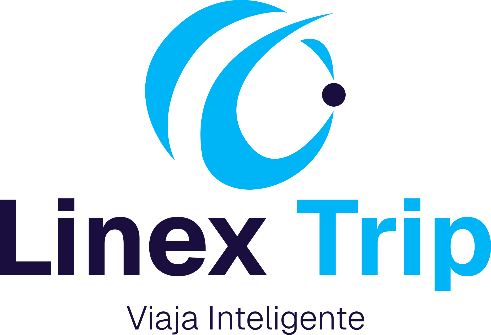
Sobre blancoOn white
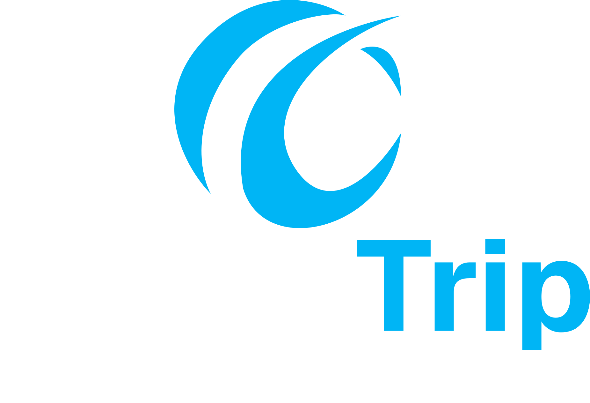
NegativoNegative
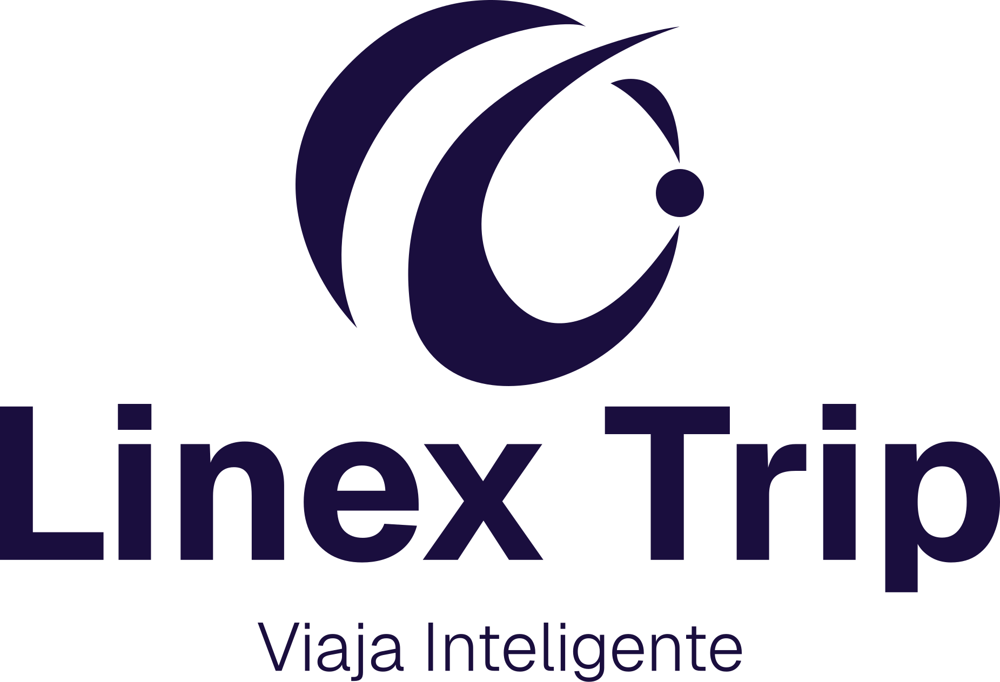
MonocromoMonochromeÍcono 32pxIcon 32px
Qué vesWhat you seeUn arco abierto que se enrosca sobre sí mismo, con un punto suelto en el borde. Órbita, trayectoria, un mundo visto desde afuera.An open arc that curls back on itself, with a loose dot at the edge. Orbit, trajectory, a world seen from outside.
Qué dice de Linex TripWhat it says about Linex TripEs la más abstracta y la más tecnológica de las siete: habla de sistema y de alcance, no de un destino concreto. De “Viaja Inteligente” se queda con inteligente y suelta viaja.It’s the most abstract and the most technological of the seven: it speaks of system and reach, not a specific destination. Of “Travel Smart” it keeps smart and lets go of travel.
A quién reconoceWho it recognisesAl planificador digital, que ya piensa el viaje como un sistema de opciones. A la familia viajera le dice poco: no hay nadie en el dibujo.The digital planner, who already thinks of the trip as a system of options. It says little to the travelling family: there’s nobody in the drawing.
Dónde brilla y dónde sufreWhere it shines and where it strugglesBrilla en grande y sobre navy: portada, banner, pantalla de carga. Sufre en pequeño — el arco es fino y se quiebra, y el punto suelto empieza a leerse como una mota de suciedad en vez de como parte del símbolo.It shines large and over navy: homepage, banner, loading screen. It suffers small — the arc is thin and breaks up, and the loose dot starts to read as a speck of dirt instead of part of the symbol.
Chequeo del sistemaSystem checkContraste 2.35:1Contrast 2.35:1Paleta oficialOfficial paletteMonocromoMonochromeSolo verticalVertical only Toda la masa del símbolo es celeste; solo el punto es navy. Y es la única sin versión horizontal, que es la que más se usa en web y en firma de correo.The whole mass of the symbol is sky blue; only the dot is navy. And it’s the only one without a horizontal version, which is the one used most on the web and in email signatures.
Tres decisiones que la elección arrastraThree decisions the choice drags along
Estas tres no dependen de cuál gane: hay que resolverlas igual, y conviene resolverlas en la misma reunión para que la propuesta elegida no quede a medias.These three don't depend on which one wins: they need to be resolved either way, and it's worth resolving them in the same meeting so the chosen proposal doesn't end up half-finished.
La bajada “Viaja Inteligente”The tagline “Travel Smart”
Las siete propuestas la traen incorporada; el logotipo vigente de 01 no la tiene. Hay que decidir si la bajada es parte del logo — y entonces entra en la zona de seguridad, el tamaño mínimo y las tres versiones oficiales — o si es solo el encuadre de esta presentación.All seven proposals carry it built in; the current logo in 01 doesn’t have it. It needs to be decided whether the tagline is part of the logo — in which case it enters the safety zone, minimum size and the three official versions — or whether it’s just the framing for this presentation.
El celeste como símboloSky blue as the symbol
Si gana una de las cuatro con símbolo celeste, hay dos salidas: recolorear el símbolo a navy, o escribir en 07 una excepción explícita para el logotipo. Las dos son válidas; lo que no es válido es dejarlo sin decidir y que cada pieza lo resuelva a su manera.If one of the four with a sky-blue symbol wins, there are two ways out: recolour the symbol to navy, or write an explicit exception for the logo in 07. Both are valid; what isn’t valid is leaving it undecided and letting each piece solve it its own way.
El tercer azul de la 03The third blue in 03
El #0E58A1 no está entre los seis colores oficiales de 03. Si gana la 03, o el color se sustituye, o la paleta pasa de seis a siete — y eso ya no es una decisión de logo, es una decisión de sistema.The #0E58A1 isn’t among the six official colours in 03. If 03 wins, either the colour gets swapped, or the palette goes from six to seven — and that’s no longer a logo decision, it’s a system decision.
Cuando se elijaOnce it’s chosen
La propuesta ganadora se sube a 01 · Logotipo como marca principal con sus tres versiones oficiales, zona de seguridad y tamaños mínimos; esta página se conserva como registro de la exploración, con el resultado anotado arriba. Si la elección toca la paleta o la regla de contraste, 03 y 07 se actualizan en el mismo cambio, junto con los tokens de marca. Hasta entonces, ninguna pieza usa un símbolo: el logotipo de Linex Trip es el wordmark.The winning proposal gets uploaded to 01 · Logo as the primary logo, with its three official versions, safety zone and minimum sizes; this page stays as a record of the exploration, with the result noted above. If the choice affects the palette or the contrast rule, 03 and 07 get updated in the same change, along with the brand tokens. Until then, no piece uses a symbol: Linex Trip’s logo is the wordmark.